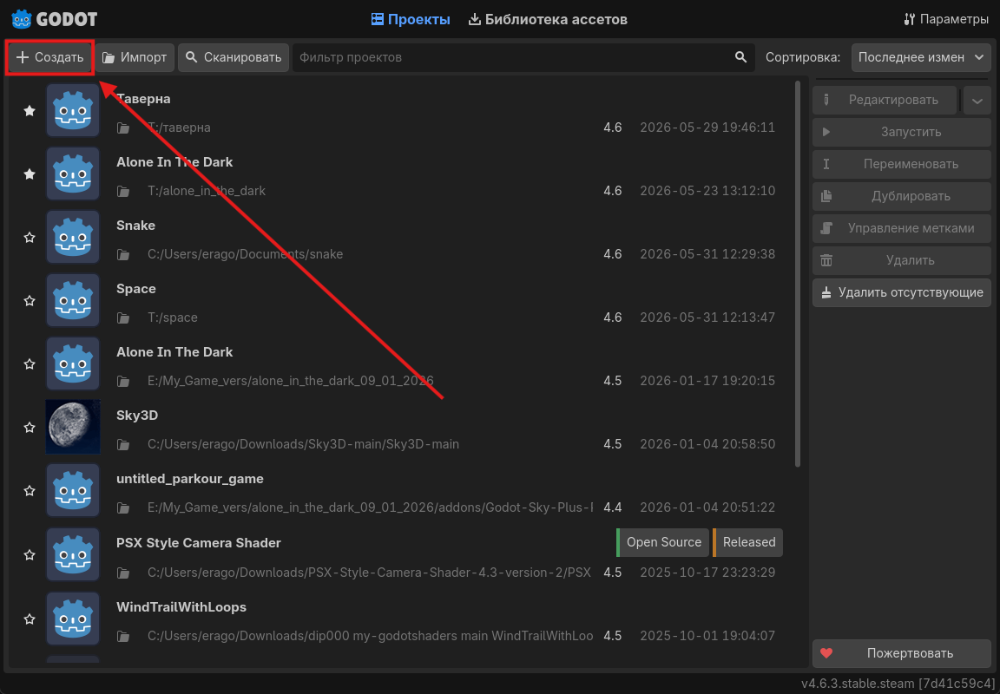
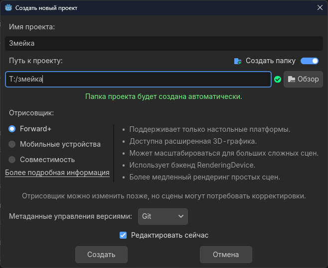

В этой части мы создадим пустой проект, познакомимся с интерфейсом и настроим базовые параметры окна для нашей будущей игры.
Запустите Godot Engine. Перед вами откроется Менеджер проектов. Нажмите кнопку «+ Создать» в левом верхнем углу экрана.

В появившемся окне нужно задать базовые настройки:
Змейка.T:/змейка). Убедитесь, что включен переключатель «Создать папку».
Нажмите кнопку «Создать». Godot сгенерирует файлы проекта и откроет главное окно редактора.
По умолчанию Godot создает окно большого размера, но наша классическая Змейка будет работать на небольшой сетке. Давайте изменим размер игрового окна.
В верхнем меню выберите Проект → Настройки проекта. В левом списке найдите раздел Дисплей → Окно (Display → Window).
Установите следующие значения:
600400canvas_items (чтобы игра красиво масштабировалась при разворачивании окна).В левой панели (Сцена) нажмите на кнопку «2D Сцена», чтобы создать корневой узел. Переименуйте его в Main.
Нажмите Ctrl + S, чтобы сохранить сцену. Назовите файл main.tscn.
С настроенным проектом и сохраненной сценой мы полностью готовы к написанию логики игры в следующем разделе!